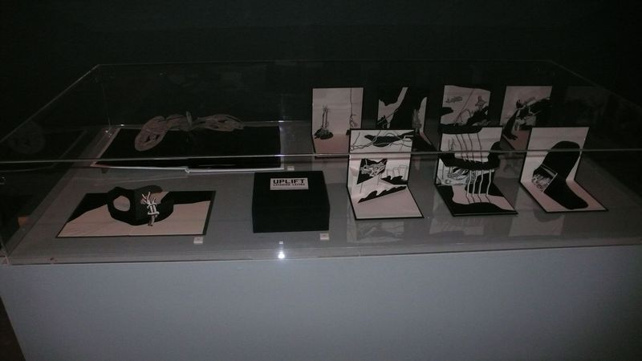

Biblioteca Nacional Lisboa
A saltar do livro. Livros Pop-Up.
Exhibition of Pop-up books. Biblioteca Nacional, Lisbon, 2016.
Botânica VI.V., 2014, was part of this exhibition and shared a vitrine with Uplift by Catarina Leitão.
A saltar do livro. Livros Pop-Up, curated by Catarina Figueiredo Cardoso and André Garcia Pimenta, Biblioteca Nacional, Galeria do auditório, Lisboa, 2016.

